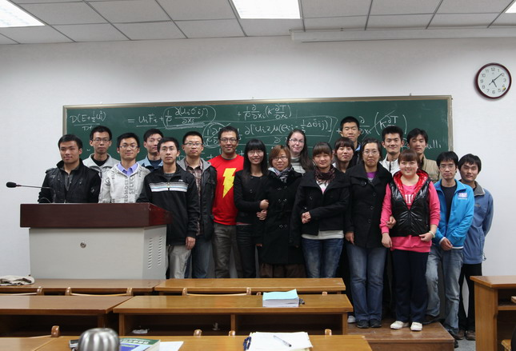

{kind=link}
{kind=link}
{kind=link}
{kind=link}
{kind=link}
{kind=link}
{kind=link}
{kind=link}
{kind=link}
{kind=link}
{kind=link}
{kind=link}
Graduate course, 64 hours,18 students, lectured in English
Text book: An Introduction to Fluid Dynamics, G.K. Batchelor, Cambridge Univ. Press, 影印版：机械工业出版社
In class final 50%, assignments 50%
 picture taken after the Haloween lecture click to enlarge
| Lecture | Date | Assignment | |
| 1 | Sept.15 | Overview of the course | |
| 2 | Sept. 19 | Math review I, tensor notations | |
| 3 | Sept. 22 | Math review II principal axes of a tensor, stress in fluids | Assignment1(due Sept.29), solution |
| 4 | Sept. 26 | Kinematics I, material derivative, continuity equation, relative motions, translation and strain | |
| 5 | Sept. 29 | Kinematics II, relative motion, rotation and vorticity | Assignment2 (due Oct. 10), solution: page1, page2 |
| Oct. 3 | National day holiday break | ||
| Oct. 6 | National day holiday break | ||
| 6 | Oct. 10 | Decomposition I: source and sink | |
| 7 | Oct. 13 | Decomposition II: Vorticity distribution | |
| 8 | Oct. 17 | Decomposition III: Irrotational solenoidal flow | |
| 9 | Oct. 20 | Integral form of momentum equation | Assignment3(due Oct.27) Solution: p1,p2,p3 |
| 10 | Oct. 24 | Stress tensor | |
| 11 | Oct. 27 | Navier-Stokes equation, thermodynamics review (section 1.5) | |
| 12 | Oct. 31 | Transport equation(section 1.6), energy equation | |
| 13 | Nov. 3 | Bernoulli equation | Assignment4(due on Nov.14) solution:p1, p2 |
| 14 | Nov. 7 | Steady and unsteady unidirectional flow | |
| 15 | Nov. 10 | Ekman layer | Assignment 5: questions 2 & 3 on page 263 (due on Nov. 21) solution |
| 16 | Nov. 14 | Dynamical simularity , slides | |
| 17 | Nov. 17 | Flow with no inertia | |
| 18 | Nov. 21 | Vorticity dynamics | |
| 19 | Nov. 24 | Circulation thereom, slides | Assignment 6: part_a, part_b , solution a, b, c |
| 20 | Nov. 28 | Boundary layer with zero pressure gradient, Blasius solution | |
| 21 | Dec. 1 | Boundary layer with pressure gradient, separations, drag reduction, slides | |
| 22 | Dec. 5 | Jet, free shear layer and wake | |
| 23 | Dec. 8 | Turbulence modelling and measurements, slides 1, 2, 3 | |
| 24 | Dec.12 | Irrotational flow theory,complex potential, uniform flow, point source | |
| 25 | Dec. 15 | Doublet, free vortex, Joukowski formular | |
| 26 | Dec. 19 | Conformal mapping, airfoil | check webpage1 webpage2 |
| 27 | Dec. 22 | Course review , slides | |